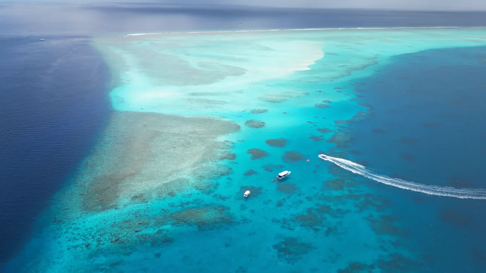
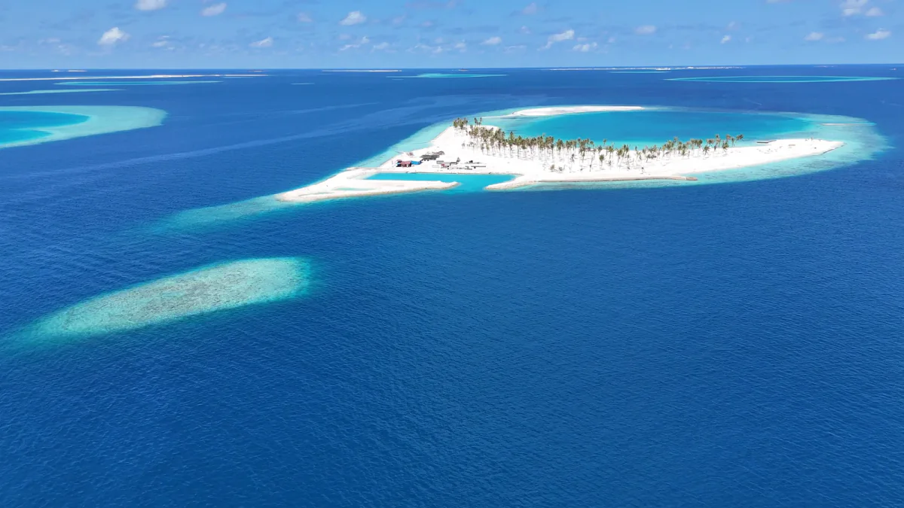
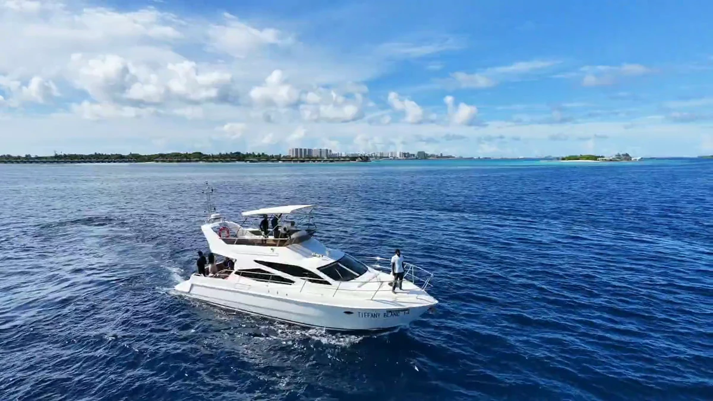
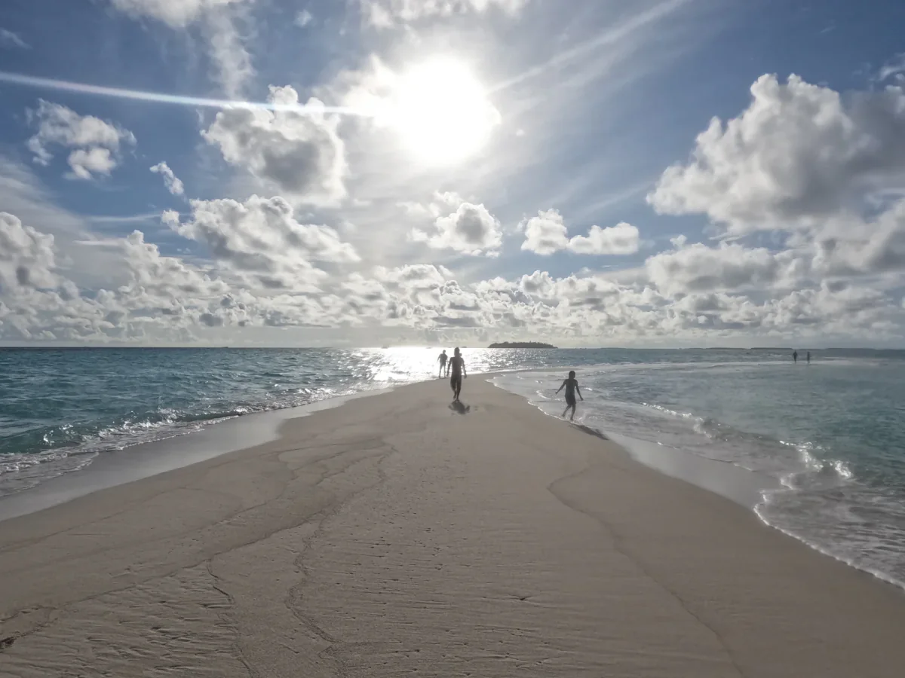
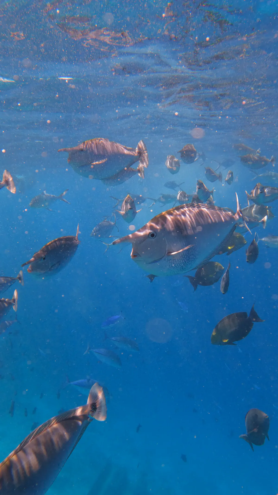
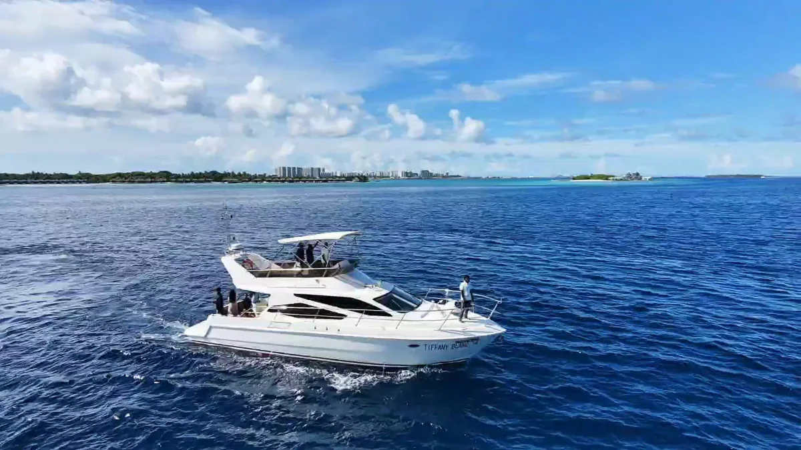
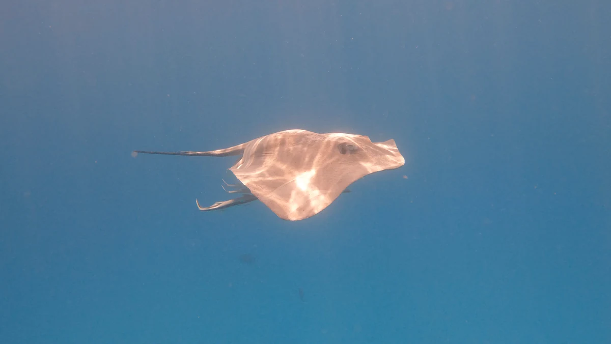
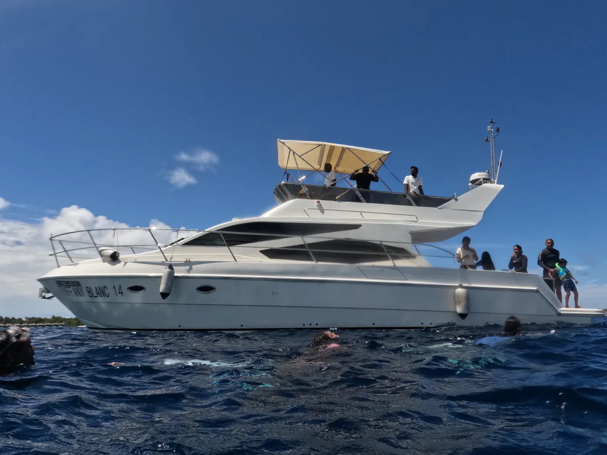

One vessel
The sea, at your own pace
Private charters out of Hulhumalé Marina aboard Tiffany Blanc 14. One party aboard, a crew of three, and a route drawn the morning you sail.




Below
And then the water opens
Reefs, channels, and whatever is passing through them that morning.
The vessel
Tiffany Blanc 14
Fourteen metres, refitted in 2025. Twelve aboard for the day, four asleep on the water.

14.2mLength
12Guests
2Cabins
3Crew